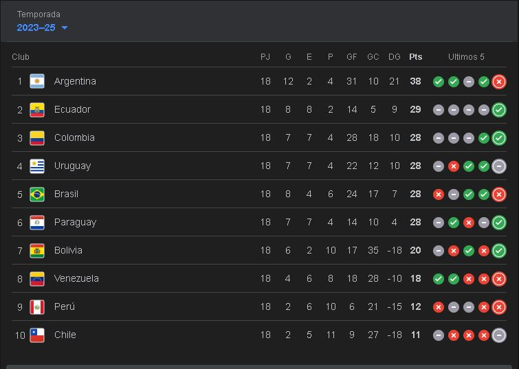

Bienvenido a Noticias del Día, el lugar donde encuentras la información más reciente sobre actualidad, economia y cultura.
Últimas Noticias
| Título | Fecha | Fuente |
|---|---|---|
| El peso colombiano moneda más revaluada | 10/09/2025 | larepublica.co |
| La Nasa bloquea a ciudadanos chinos | 09/09/2025 | Global Times |
| Colombia y el gran tercer puesto | 08/09/2025 | Deportes Hoy |

El peso colombiano inicia la sesión siendo la moneda más revaluada de las regionales.

Fenómenos La Nasa bloquea a ciudadanos chinos con visa de Estados Unidos de sus programas.

Así está Colombia en la tabla de posiciones de las Eliminatorias